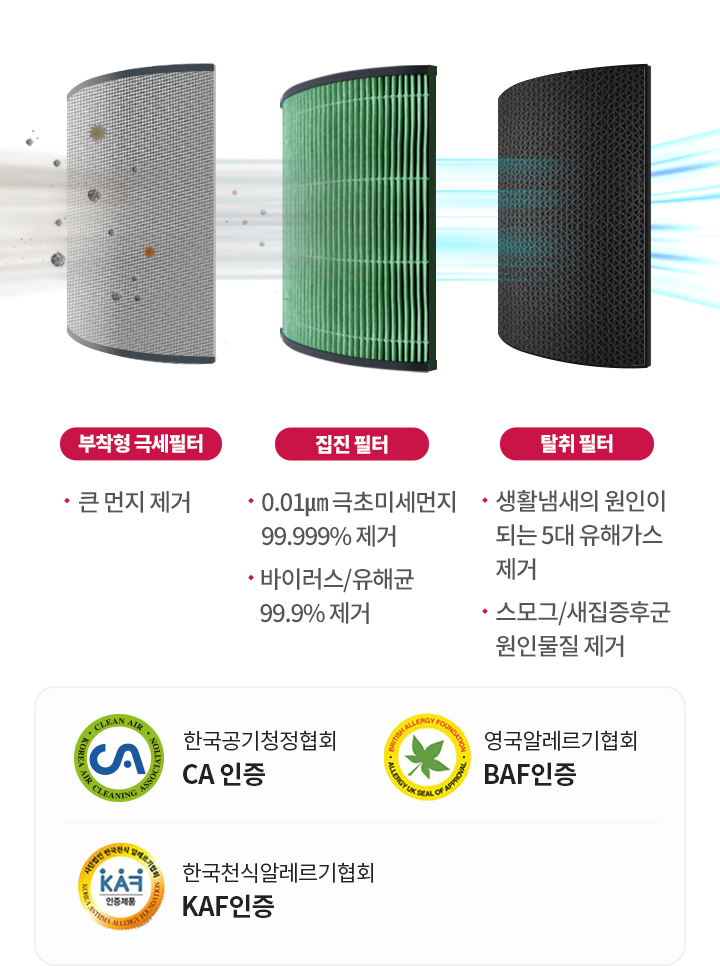
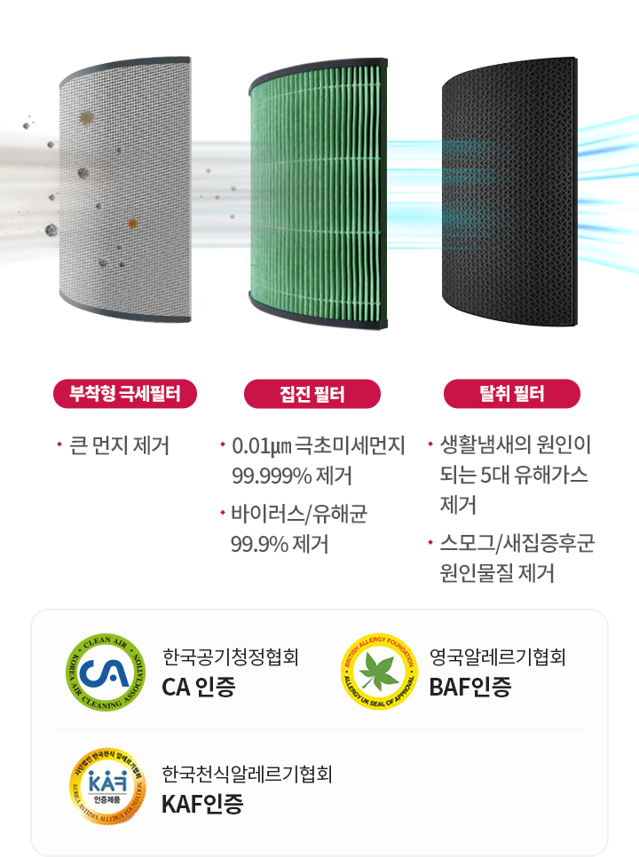

LG PuriCare
에어로타워는
우리 생활을
어떻게 바꿀까요?
때로는 따뜻하게
때로는 시원하게
원하는 온도로 기분 좋은 바람을 전하고
어떤 공간, 어떤 상황에도
깨끗한 공기를 마음 놓고 마실 수 있도록
공기청정팬 에어로타워가 사계절 청정 라이프를 책임집니다.
때로는 시원하게
원하는 온도로 기분 좋은 바람을 전하고
어떤 공간, 어떤 상황에도
깨끗한 공기를 마음 놓고 마실 수 있도록
공기청정팬 에어로타워가 사계절 청정 라이프를 책임집니다.


깨끗한 공기를 이제 원하는 온도로 LG PuriCare 에어로타워 - 사계절 맞춤 에어 : 송풍, 청정, 온풍을 상황에 맞춰 원하는 온도로 - 깨끗한 에어로 : UV LED와 CA 인증으로 위생부터 청정까지 - 사계절 에어로 : 오브제 컬렉션 컬러를 담은 공기역학 디자인
일상에 맞춰 원하는 온도로
사계절 맞춤 에어
공간과 생활에 맞춰 청정은 물론 온풍과 송풍까지
깨끗한 공기를 이제 원하는 온도로 만나보세요.
깨끗한 공기를 이제 원하는 온도로 만나보세요.
생활에 쾌적함을 더하고
공간에 깨끗함을 채우는
사계절 청정 바람을 소개합니다
사계절 맞춤 에어 - 온풍기능
쌀쌀한 환절기에도
마음 놓이는 따뜻함
목표 온도보다 실내 온도가 낮아지면
온풍으로 공간에 온기를 더합니다.
일교차가 큰 날이나 목욕 직후 등
언제나 기분 좋은 따뜻함으로 맞아 주죠.
온풍으로 공간에 온기를 더합니다.
일교차가 큰 날이나 목욕 직후 등
언제나 기분 좋은 따뜻함으로 맞아 주죠.
-
* 시험모델 : FS061PWHA
* 시험일자 : 21.09.27~10.15
* 시험방법 :
- KANOMAX 사 다지점 기류계측기로 유속 측정
- NATIONAL INSTRUMENTS 사 온도계측기로 온도 측정
- 측정 위치 : 제품으로부터 0.3~2.5m 거리
- 측정 영역 : 폭 0.9m, 높이 0.45~1.35m
- 측정 주기 : 5초 간격으로 10분 또는 1시간 측정
* 시험장소 : LG공기과학연구소 실환경 실험실 LG스마트파크2 CMR챔버
* 시험조건 : 건물 공조를 종료하여 제품 이외의 기류가 없는 환경이며, 실내 초기 온도는 20℃
* 시험결과 : 온풍이 미치는 거리(PMV -0.5이상) 2m 이상 확인하였으며, 최대 거리는 2.2m(약풍)
* 인증기관 : LG전자 자체 평가
* 시험모델 : FS061PWHA
* 시험일자 : 21.09.27~11.16
* 시험방법 :
- 측정 방법 : Thermocouple(열전대) 활용하여 온도 측정(최대 36채널)
- 측정 영역 : 3.7m(W) * 5.2m(D) * 2.4m(H), 약 6평
- 측정 시간 : 제품 On 기준으로 60분 측정
* 시험장소 : LG스마트파크2 CMR챔버
* 시험조건 : 20℃(난방 표준 조건)
* 시험결과 : 실내온도 5도 상승하는데 걸리는 시간(약풍: 14분, 강풍 9분)
* 인증기관 : LG전자 자체 평가
사계절 맞춤 에어 - 송풍기능
공간을 빠르게 채우는
기분 좋은 시원함
일상 모든 순간에 쾌적함을 채워보세요.
10단계 바람세기 조절이 가능한 송풍기능은
1.5m 넓은 폭으로 바람을 빠르게 확산시켜
시원한 공기를 최대 10m까지 전해줍니다.
10단계 바람세기 조절이 가능한 송풍기능은
1.5m 넓은 폭으로 바람을 빠르게 확산시켜
시원한 공기를 최대 10m까지 전해줍니다.
사계절 맞춤 에어 - 청정기능
사계절 청정으로
깨끗함이 다른 공기
공기나 냄새 환기가 어려운 공간이라면
청정기능을 활용해보세요.
에어가드가 깨끗한
바람을 공중으로 넓게 보내줘 집 안 공기를
매 순간 청정하게 유지해줍니다.
청정기능을 활용해보세요.
에어가드가 깨끗한
바람을 공중으로 넓게 보내줘 집 안 공기를
매 순간 청정하게 유지해줍니다.
- * 코안다 효과(Coanda Effect): 제트기류를 표면에 따라 흐르게 하여 바람을 부드럽게 만드는 효과
사계절 맞춤 에어 - 개방형 유로
부드럽지만 강력한
에어의 비밀
비행기의 제트 엔진과 날개를 더 높이 밀어
올리는 코안다 효과를 접목한 공기 역학 기술로
팬 없이도 강력한 바람을 부드럽게 퍼뜨립니다.
올리는 코안다 효과를 접목한 공기 역학 기술로
팬 없이도 강력한 바람을 부드럽게 퍼뜨립니다.
사계절 맞춤 에어 - 저소음
일상을 방해하지 않는
조용한 바람
조용하게 상쾌함만 전하는 자연의 바람처럼
저소음으로 기분 좋은 시원함을 선사합니다.
집중이 필요한 서재, 아이가 잠든 방에서도
마음 놓고 사용해 보세요.
저소음으로 기분 좋은 시원함을 선사합니다.
집중이 필요한 서재, 아이가 잠든 방에서도
마음 놓고 사용해 보세요.
위생까지 믿음직한
깨끗한 에어
집에 머무는 시간이 길어진 요즘,
깨끗한 공기는 그 무엇보다 중요하죠.
CA 인증을 획득한 검증된 청정 능력,
내부 위생까지 케어하는 UV nano로
이제 집 안 어디서든 마음 놓고 숨 쉬세요.
깨끗한 공기는 그 무엇보다 중요하죠.
CA 인증을 획득한 검증된 청정 능력,
내부 위생까지 케어하는 UV nano로
이제 집 안 어디서든 마음 놓고 숨 쉬세요.
깨끗한 에어 - UV nano
99.9% 세균 제거로
99.9% 세균 제거로
믿음을 더하는 위생
청결함이 필수인 내부 살균도 걱정 마세요.
UV nano가 필터와 팬은 물론 공기가 지나는
통로의 바이러스,
유해균을 99.9% 깨끗하게
제거해 오래도록 안심하고 쓸 수 있습니다.
UV nano가 필터와 팬은 물론 공기가 지나는
통로의 바이러스,
유해균을 99.9% 깨끗하게
제거해 오래도록 안심하고 쓸 수 있습니다.
-
'• 시험일시 : (TÜV Rheinland) '21. 5. 10 ~ 5. 18. (한국화학융햡시험연구원 ) '21. 4. 15 ~ 5. 10.
• 시험기관 : TÜV Rheinland, 한국화학융합시험연구원
• 대상모델 : FS061PWHA
• 시험조건 : (25±2) ℃, 습도 (50±10) %, 풍량 1단, UVC LED (1시간 On)
• 시험방법 : 팬 날개의 대표위치 1곳에 대한 측정값이며, 균을 접종하고 1단계 퐁량에서 제품운전 1시간 후 대조군 대비 시험군의 생균수 저감율 평가 (참조규격 : ISO22196:2011)
• 시험균주 : Staphylococcus aureus (ATCC 6538,황색포도상구균), Staphylococcus epidermidis (ATCC 12228, 표피포도상구균), Klebsiella pneumoniae (ATCC 4352, 폐렴간균)
• 시험결과 : 살균효율 99.99% 이상
※ 본 시험 결과는 자사에서 제안한 시험방법에 따라 국제공인시험기관으로 부터 취득하였으며 위치, 수명에 따른 광출력 감소 등 실사용 환경에 따라 다를 수 있습니다.
※ UVnano 살균 효율은 UV-C LED 빛이 팬 날개에 닿는 면적에 한합니다.
-
 

STEP 01 : 5대 유해가스 제거, 스모그 원인 물질 제거 / STEP 02 : 항바이러스, 항균 99.9% 제거, 극초미세먼지 99.999% 제거 / STEP 03 : 교체형 극세필터
- * 디스클레이머 텍스트 영역입니다.
깨끗한 에어 - 트루 토탈케어 필터
우리 가족 건강 지키는

우리 가족 건강 지키는
사계절 청정 능력
떠다니는 먼지는 물론 눈에 보이지 않는
초미세먼지와 냄새,
유해가스 제거 성능을
한국 공기청정 협회에서 인증받았습니다.
기분 좋은 바람과 함께 365일 청정 생활하세요.
초미세먼지와 냄새,
유해가스 제거 성능을
한국 공기청정 협회에서 인증받았습니다.
기분 좋은 바람과 함께 365일 청정 생활하세요.
graphic description :
-
[공기청정]
* 시험모델 : FS061PWHA
* 시험일자 : 21.07.13 ~ 21.07.19
* 시험방법 : 0.01 ㎛ 직경의 KCl(염화칼륨) 입자 발생 안정화 후 4시간 동안 먼지제거율이 99.999 more % 로 떨어질 때까지 공기청정기를 동작시켜 운전감소를 측정한다. (참조 규격 : SPS-KACA 002-132:2018, 실내용 공기청정기 부속서 A)
* 시험장소 : 한국건설생활환경시험연구원 (KCL)
* 시험조건 : 온도 : 청정화 챔버크기 : 30.0㎥, 온도 : 23.0±1.0℃, 습도 : 50.0±2.0 %R.H., 운전 조건 : 터보
* 시험결과 : 0.01㎛ 미세먼지 99.999% 제거 (29분 15초 이상 가동시 99.999% 제거)
[공기청정]
* 시험모델 : FS061PSSA
* 시험일자 : 21.09.27~21.10.22
* 시험방법 : SPS-KACA 002-0132 실내공기청정기 (한국공기청정협회 단체규격) 청정화능력 시험
* 시험장소 : 한국전자기술연구원 (KETI) 실험실
* 시험조건 : 시험용 공기의 환경조건은 규정이 없는 한, 다음의 범위에서 시험한다.
a) 온도 : 23±5oC
b) 상대습도 : 55±15%
* 시험결과 : 정격 청정화능력 2.4 ㎥/min에 대한 인증 기준 : 정격 -10% 이상 만족함.
* 인증기관 : 한국공기청정협회
[항알러지]
*인증일시: 2021년 10월 21일
*인증기관 : 사단법인 한국천식알레르기협회 (KAF, Korea Asthma Allergy Foundation)
*인증부문 : 공기청정기 부문
*인증일시: 2021년 10월 6일
*인증기관 : 영국 알레르기 협회(BAF, British Allergy Foundation)
*인증부문 : Efficiency reducing small particulates which may include allergens, bacteria, and viruses
[필터수명]
* 시험모델 : FS061PWHA
* 시험일자 : 집진('21.5/3~5/24), 탈취('21.6/4~9/1)
* 시험방법 : JEM 1467 필터 내구성 평가
* 시험장소 : 필터공급 협력사, 집진(C&S), 탈취(이노필텍)
* 시험조건 : 1㎥, 강풍, 22.5±2.5℃, 45±15%, 담배연기 누적제거시험, 초산/암모니아/아세트알데히드 제거효율평가
* 시험결과 : 집진수명(1.8년), 탈취수명(2.5년), 1일 5개피 제거 성능 기준
[센싱]
* 시험모델 : FS061PSSA
* 시험일자 : 21.09.27~21.10.22
* 시험방법 : SPS-KACA 002-0132 실내공기청정기 (한국공기청정협회 단체규격) 공기청정기용 미세먼지 센서 성능
* 시험장소 :
* 시험조건 : 특별한 규정이 없는 한 시험은 바람이 없는 상태로서, 통상의 주위 온도 23±5℃, 대기압 760±20mmHg로 유지하는 장소에서 실시한다.
* 시험결과 : 측정범위에서 기준계측기의 고농도에서 ±50% 범위이내, 저농도에서 ±15 ㎛/㎥ 범위이내
* 인증기관 : 건설생활환경시험연구원 (KCL)
[항균 99.9%]
시험 일시 : '20 . 4 . 3
시험 기관 : 한국화학융합시험연구원
시험 대상 : 항균필터 / 항균 미처리 필터(대조군)
시험 조건 : 0.4g, (37 ± 1)℃, (18 ± 1) h
시험 방법 : KS K 0693 : 2016 감소율(%) : 시험편과 대조 시험 편의 18시간 배양 후 생균수 비교
시험 균주 : Staphylococcus aureus ATCC 6538 (황색 포도상 구균) / Klebsiella pneumoniae ATCC 4352 (폐렴간균) / Escherichia coli ATCC 25922(대장균)
시험 결과 : 항균 미처리 필터 대조군 결과 대비 항균 시험(S. aureus) 99.9% 이상, 항균 시험(K. pneumoniae) 99.9% 이상, 항균 시험(E.coli) 99.9% 필터에 포집된 공기에 한합니다.
실험실 측정 기준으로 실 사용 환경에서는 달라질 수 있습니다.
실험실 결과는 제품 초기 성능을 측정한 결과이며, 사용 시간에 따라 달라질 수 있습니다.
[항바이러스 99.9%]
시험 일시 : '20 . 3 . 1 ~ '20 . 3 . 31
시험 기관 : 서울대학교 보건대학원
시험 대상 : 항균필터 / 표준 백포(PET 부직포) 성능 비교(대조군)
시험 조건 : 23.1 ~ 24.8℃, 습도 20~22%
시험 방법 : ISO 20743 감소율(%) : 시험 편의 0시간(초기 농도)과 18시간 배양 후 바이러스 감소율 비교
시험 균주 : 쥐 코로나바이러스 (mouse hepatitis virus) ※ COVID19와 다른 균주임
시험 결과 : 표준백포 대조군 초기 대비 99.9% 바이러스 감소
필터에 포집된 공기에 한합니다.
실험실 측정 기준으로 실 사용 환경에서는 달라질 수 있습니다.
실험실 결과는 제품 초기 성능을 측정한 결과이며, 사용 시간에 따라 달라질 수 있습니다.
아름다움 그 이상의 가치
공간인테리어 가전
취향에 맞춰 선택하는 오브제 컬렉션 컬러,
협곡을 모티브로 탄생한 우아한 디자인까지.
조용하고 부드러운 에어가 당신의 공간을
쾌적하게 그리고 아름답게 물들입니다.
협곡을 모티브로 탄생한 우아한 디자인까지.
조용하고 부드러운 에어가 당신의 공간을
쾌적하게 그리고 아름답게 물들입니다.
공간 인테리어 가전 - 글렌디 디자인
공기의 흐름을
생각한 디자인
바람이 흐르는 협곡을 형상화한 에어로타워는
공기의 흐름을 모아주는 공기역학 디자인으로
자연에서 불어오듯 부드럽게 바람을 전합니다.
공기의 흐름을 모아주는 공기역학 디자인으로
자연에서 불어오듯 부드럽게 바람을 전합니다.
공간 인테리어 가전 - 오브제 컬렉션
일상에 조화롭게
녹아드는 디자인
예술적인 소품처럼 공간을 빛내는 디자인,
취향대로 맞춤하는 트렌디한 4가지 컬러로
집 안의 분위기를 감각적으로 바꿔 보세요.
취향대로 맞춤하는 트렌디한 4가지 컬러로
집 안의 분위기를 감각적으로 바꿔 보세요.
LG ThinQ 앱
언제 어디서나
언제 어디서나
보기 쉽고 쓰기 쉽게
켜고 끄는 간단한 설정부터 필터 수명과
실내 환경 모니터링 같은
세심한 케어까지
LG ThinQ 앱 하나로 편리하게 관리하세요.
실내 환경 모니터링 같은
세심한 케어까지
LG ThinQ 앱 하나로 편리하게 관리하세요.